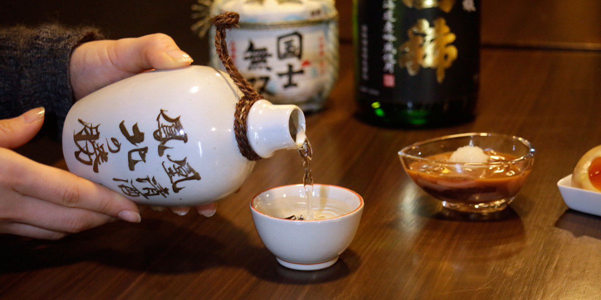

Ini adalah Praktikum html tentang cara Membuat Paragraf,
Saat ini saya masih belajar html.
Ini adalah membuat heading paling besar
Ini adalah membuat heading paling kecil
FORMAT TEBAL
FORMAT MIRING
MARK
CO2
H2
Klik disini!!! untuk ke halaman lain

Di atas tulisan ini saya memunculkan gambar sake :v
Belajar Unordered List :
Belajar Ordered List :
- Bakso
- MIE AYAM
- NASI GORENG
- Coffee
- - black hot drink
- Milk
- - white cold drink
| Name |
NO HP |
| Supri Suprek |
08922112211 |
08321113332 |